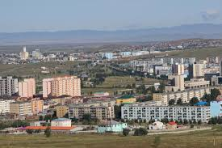
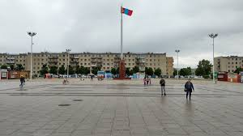

Darkhan
La provincia de Darkhan se construyó en 1961 como un centro industrial en el norte y la provincia de Darkhan-Uul se estableció en 1994. Con una población de 75 000 habitantes, Darkhan es la segunda ciudad más grande de Mongolia. El territorio de la provincia se encuentra a 700 metros sobre el nivel del mar y A 230 km de la capital Ulán Bator.

Miluska: La provincia de Darkhan-Uul se encuentra entre las cadenas montañosas de Khangai y Khentii en Orkhon y Selenge son vastos valles fluviales. En los 32.750 kilómetros cuadrados de esta provincia hay muchos lugares de belleza natural y algunos lugares de interés.
La Museo de Darkhan-Uul llamado Museo tradicional de arte popular, contiene una colección bien presentada de hallazgos arqueológicos, vestimenta tradicional, artefactos religiosos y algunos animales de peluche obligatorios.
El Monasterio Kharagiin Khiid La vista más interesante en Darkhan es el monasterio Kharagiin. Ubicado en una bonita cabaña de madera en el casco antiguo, recientemente se ha vuelto muy activo.
La Plaza de Darkhan Te dejará maravillado, la arquitectura de la plaza te transmite gran parte de la historia de esta ciudad.
Las laderas orientales las montañas Khangai y las estribaciones occidentales de la cordillera Khentii. La parte sur, las cuencas de los ríos Tuul y Orkhon (Orhon), es una región fértil importante en la historia de Mongolia como cuna de formas de vida establecidas.